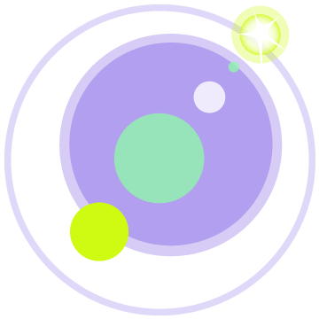

THIS ARTICLE WAS FOR SHINY 1.x AND NOW DEPRECATED
What is it?
Ever wanted to write a backgrounding experience that is consistent across all of the .NET platforms you work with? Between Xamarin Android, Xamarin iOS, and the Universal Windows Platform (UWP) - there are a variety of issues that I've seen commonly occuring that makes this difficult. As .NET developers, we often want our dependency injection, our async/awaits, and our general way of doing things in our ecosystem. The mobile platforms really flipped us on our head. Android has services & broadcast receivers, iOS has too many different ways of coming at backgrounding, and UWP is somewhere in between.
There have been several plugins over time to help combat this problem, but all fail at some point because they lack the necessary infrastructure to bring it all together. I have seen developers frequently fight this issue with things like BluetoothLE, GPS, Geofencing, background synchronization, etc. Making this code testable is even harder and often painful to work with.
 Enter Shiny - a new framework that tackles problems that no other framework currently tackles - backgrounding and device hardware with all the bells and whistles you are use to in the .NET ecosystem. Shiny was built on the premise of making depenendency injection and cross platform backgrounding a consistent & testable experience.
Out of the box, Shiny will offer:
- A Centralized Hosting Platform
- Environment (App & Device Information)
- Logging
- Connectivity
- File System & IO Extensions
- Power Management
- Permissions
- Settings
- Background Jobs
- Geofencing
- GPS (Foreground & Background)
- Bluetooth LE (GATT Peripheral & Central)
- Beacons
- Speech Recognition
- HTTP File Transfers
- Sensors
- Notifications
Why Another Essentials or Set of Plugins?
Well - to be fair, I've had most of these libraries before some of the other plugins existed. I also set out to offer a DI and background experience in a cross platform way first. I also wanted to open the door to other platforms like Tizen, macOS, Linux, Blazor, Uno, & possibly even Meadow as other platforms for the future. This library has zero focus on UI and will only focus on service processes - I'll leave the frontend stuff to Xamarin Forms & Uno.
Current plugins also tend to lack features because they need an underlying layer to help keep things in check. For instance, Plugin.Jobs (one of my plugins) spins up periodic jobs. These jobs are essentially useless if you can't get your service layer into them in a consistent manner.
Interoperability
Because Shiny sits a bit higher in the execution pipeline (before Xamarin Forms gets going for example), it has its own set of registration principles and bootstrapping. However, I wanted to play nice with Xamarin Forms & great frameworks like MvvmCross and Prism (shoot to Dan & Brian - you guys are awesome)! There are already mechanisms to help these frameworks play nice out of the box from Day 1, but there is a roadmap to make this experience nearly seemless in the near future.
At It's Core
Shiny was built with Reactive Extensions (RX) and Microsoft Extension (DI) out of the box. The Microsoft.Extensions.DependencyInjection had the greatest balance of speed, flexibility, and forward thinking support. Reactive Extensions brings a different paradigm of programming which is often seen as complex. I choose to embrace it because all other ecosystems embrace it fully (RXJS, Flutter, Java, etc). I argue that RX isn't complex, it is powerful. Shiny wants to offer that power at its roots! As for dependency injection, it often has the same set of arguments and that it is slow. For backgrounding, DI is extremely POWERFUL and gives you your infrastructure & business logic where you need it. It also makes your code testable!
Let's see it in action
Step 1 - Install from nuget (given) Step 2 - In your xplat project, create Step 3 - Create your "Startup" class
// this sample uses everything imaginable in Core - YOU DO NOT NEED IT ALL
using Shiny;
using Shiny.BluetoothLE;
using Shiny.Beacons;
using Shiny.Logging;
using Shiny.Locations;
using Shiny.Notifications;
using Shiny.Sensors;
using Shiny.SpeechRecognition;
using Shiny.Net.Http;
using Microsoft.Extensions.DependencyInjection;
namespace Samples
{
public class SampleStart : ShinyStartup
{
public override void ConfigureServices(IServiceCollection builder)
{
// custom logging
Log.UseConsole();
Log.UseDebug();
// create your infrastructure
builder.AddSingleton<SampleSqliteConnection>();
// register all of the acr stuff you want to use
builder.UseHttpTransfers<SampleDelegate>();
builder.UseBeacons<SampleDelegate>();
builder.UseBleCentral();
builder.UseBlePeripherals();
builder.UseGpsBackground<SampleDelegate>();
builder.UseGeofencing<SampleDelegate>();
builder.UseNotifications();
builder.UseSpeechRecognition();
builder.UseAccelerometer();
builder.UseAmbientLightSensor();
builder.UseBarometer();
builder.UseCompass();
builder.UseDeviceOrientationSensor();
builder.UseMagnetometer();
builder.UsePedometer();
builder.UseProximitySensor();
}
}
}
Step 4 - Create Some Delegates
Notice those "SampleDelegate" generics above, that's where you register your background handler(s). It is truly this simple to get up and running.
// again - this runs everything and the kitchen sink - pick and choose what you need
using System;
using System.Threading;
using System.Threading.Tasks;
using Shiny;
using Shiny.Beacons;
using Shiny.BluetoothLE.Central;
using Shiny.Locations;
using Shiny.Jobs;
using Shiny.Net.Http;
using Shiny.Notifications;
using Samples.Models;
namespace Samples
{
public class SampleAllDelegate : IGeofenceDelegate,
IGpsDelegate,
IBeaconDelegate,
IHttpTransferDelegate,
IBleStateRestoreDelegate,
IJob
{
// notice you can inject anything you registered in your application here
readonly SampleSqliteConnection conn;
readonly INotificationManager notifications;
public SampleAllDelegate(SampleSqliteConnection conn, INotificationManager notifications)
{
this.conn = conn;
this.notifications = notifications;
}
public async Task OnConnected(IPeripheral peripheral)
{
}
public async Task OnStatusChanged(GeofenceState newStatus, GeofenceRegion region)
{
}
public async Task OnStatusChanged(BeaconRegionState newStatus, BeaconRegion region)
{
}
public async Task<bool> Run(JobInfo jobInfo, CancellationToken cancelToken)
{
return true;
}
public async Task OnError(HttpTransfer transfer, Exception ex)
{
}
public async Task OnCompleted(HttpTransfer transfer)
{
}
public async Task OnReading(IGpsReading reading)
{
}
}
}
Step 5.1 - Initializing iOS
iOS is pretty easy - GO to AppDelegate and add the following stuff
// in your FinishedLaunching method
Shiny.iOSShinyHost.Init(new Startup(), services =>
{
// register any platform specific stuff you need here
});
// and add this guy - if you don't use jobs, you won't need it
public override void PerformFetch(UIApplication application, Action<UIBackgroundFetchResult> completionHandler)
=> JobManager.OnBackgroundFetch(completionHandler);
Step 5.2 - Initializing Android
Android requires a fair bit more setup to get going. Android requires a top level custom Application definition. This is necessary as the Host needs to be initialized prior to any services or broadcast receivers warming up.
using System;
using Android.App;
using Android.Runtime;
[Application]
public class YourApplication : Application
{
public YourApplication(IntPtr handle, JniHandleOwnership transfer) : base(handle, transfer)
{
}
public override void OnCreate()
{
base.OnCreate();
Shiny.AndroidShinyHost.Init(this, new Startup(), services => {
// register any platform specific stuff you need here
});
}
}
// and lastly - in your main/current activity
public override void OnRequestPermissionsResult(int requestCode, string[] permissions, Permission[] grantResults)
{
Shiny.AndroidShinyHost.OnRequestPermissionsResult(requestCode, permissions, grantResults);
base.OnRequestPermissionsResult(requestCode, permissions, grantResults);
}